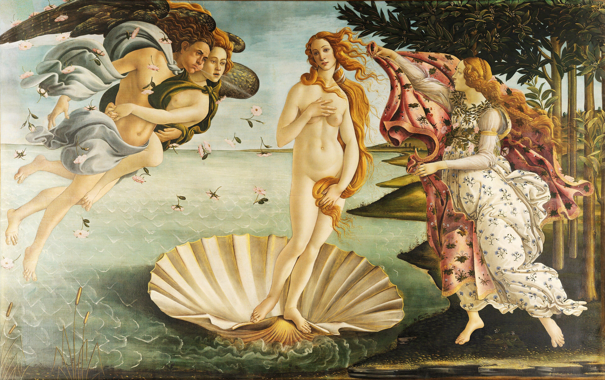
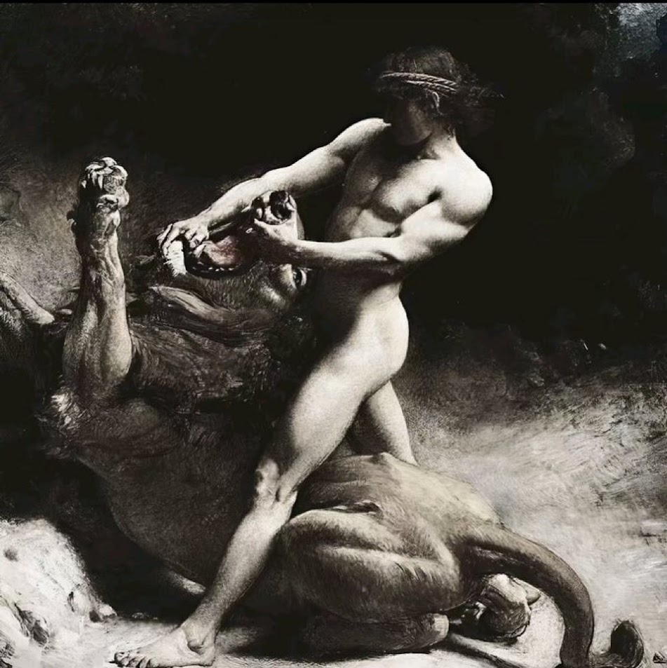

Quotes
Beauty

“A man should hear a little music, read a little poetry, and see a fine picture every day of his life, in order that worldly cares may not obliterate the sense of the beautiful which God has implanted in the human soul.”
— Johann Wolfgang von Goethe
“A man sees in the world what he carries in his heart.”
— Johann Wolfgang von Goethe
“I do not, fortunately, have the bourgeois habit of passively enjoying beauty as a kind of nourishment for the mind. Bourgeois types like to follow a typically mammalian procedure in everything: ingestion, mastication, digestion, elimination.”
— Yukio Mishima
Thumos

“The bravest are surely those who have the clearest vision of what is before them, glory and danger alike, and yet notwithstanding, go out to meet it.”
— Thucydides
“The only man who never makes mistakes is the man who never does anything.”
— Theodore Roosevelt
“Teenage boys, goaded by their surging hormones run in packs like the primal horde. They have only a brief season of exhilarating liberty between control by their mothers and control by their wives.”
— Camille Pagila
“The true soldier fights not because he hates what is in front of him, but because he loves what is behind him.”
— G.K. Chesterton